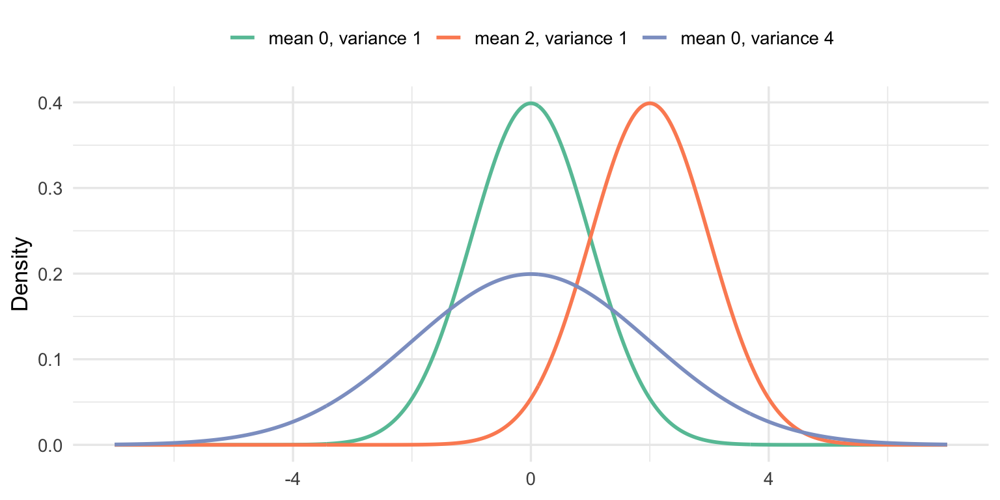
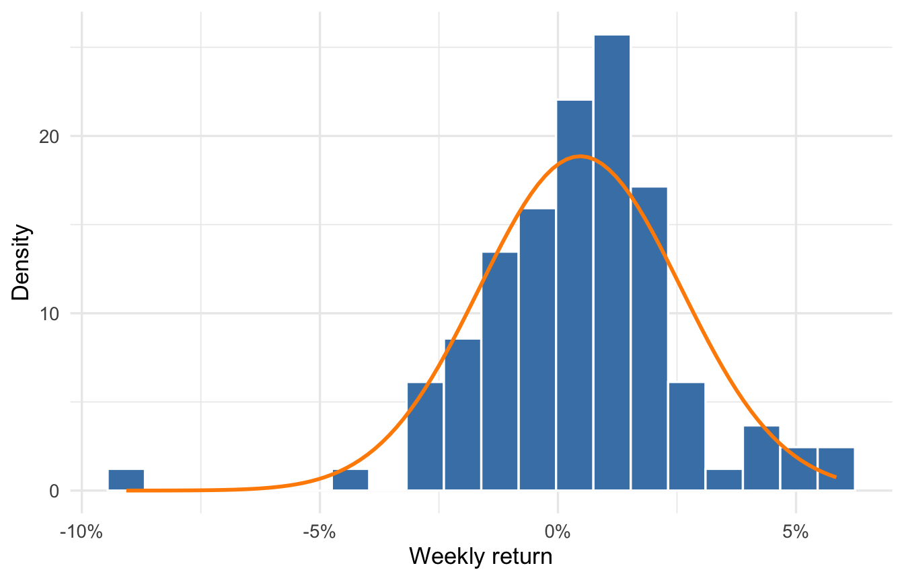
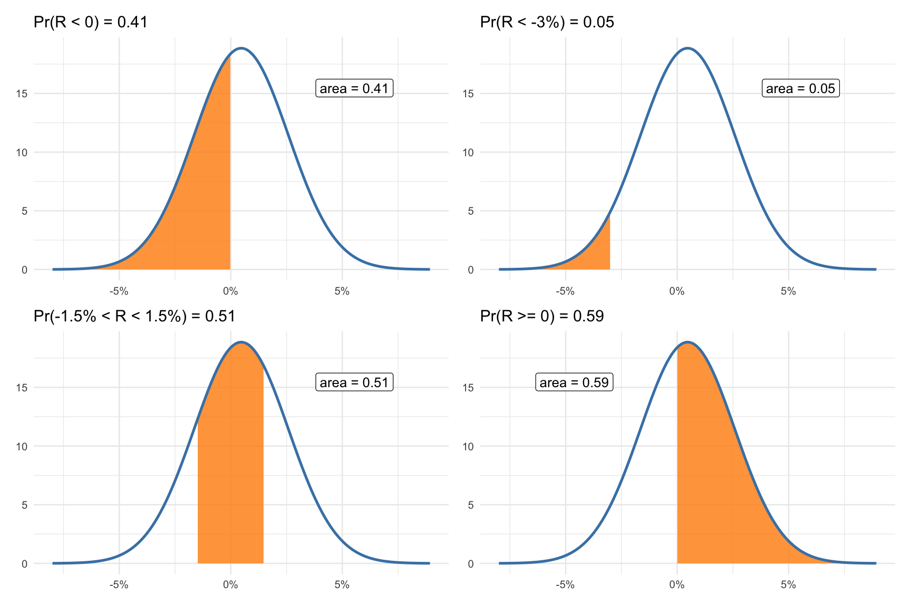
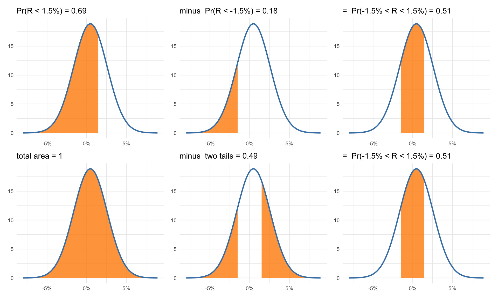
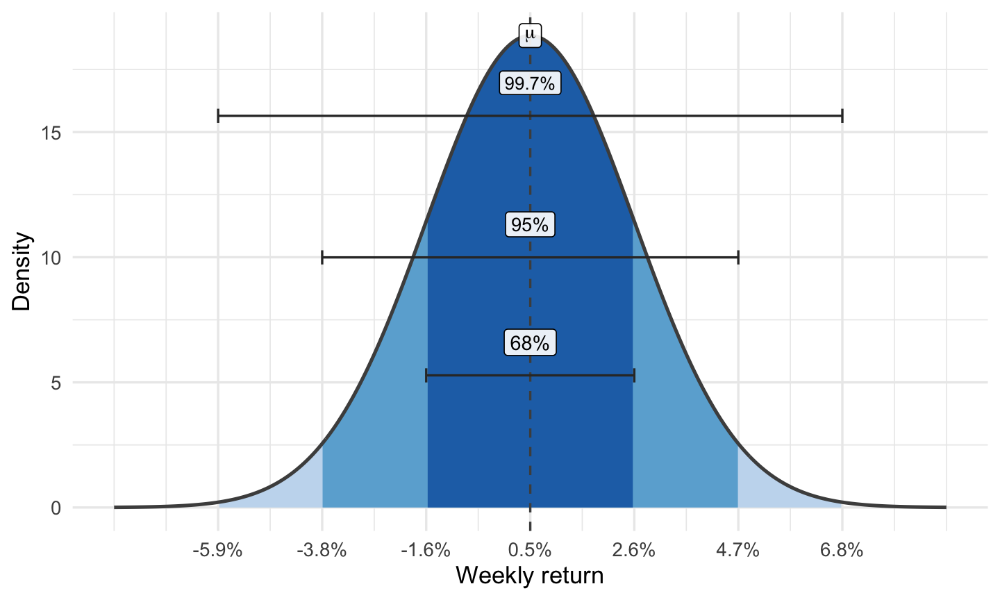
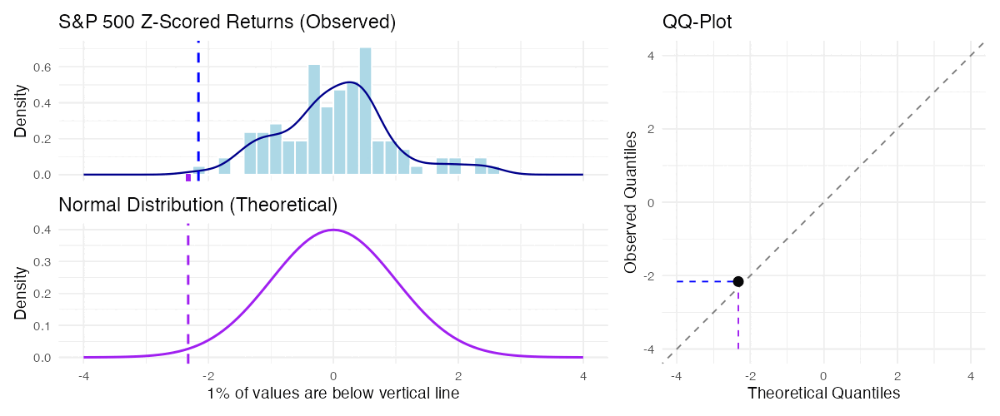
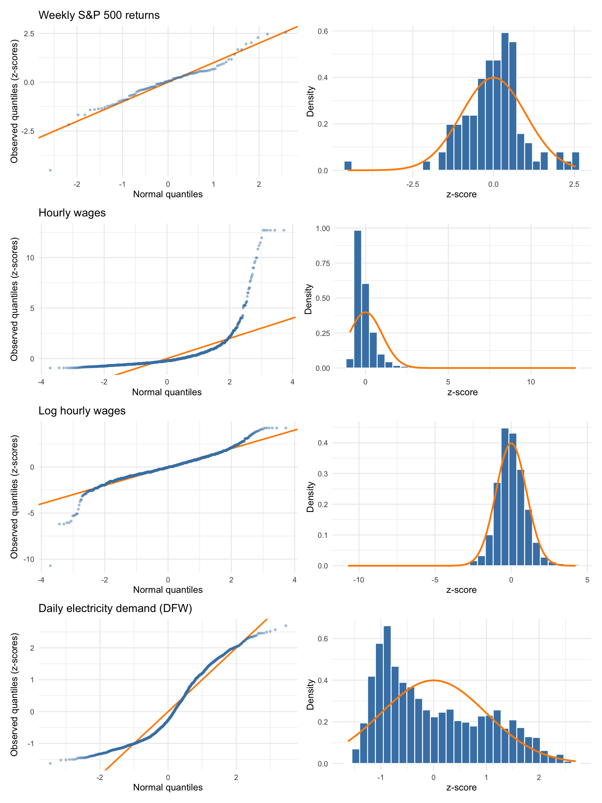
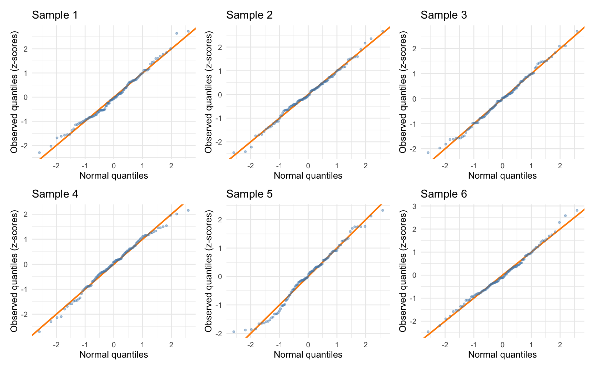

9 The Normal Distribution
This chapter introduces one of the most important families of continuous probability distributions: the normal distribution.
9.1 The probability density function
Definition 9.1: Normal distribution
The normal distribution (also known as the Gaussian distribution) is the symmetric continuous distribution governed entirely by two parameters: a mean \(\mu\) and a variance \(\sigma^2\). The mean locates the center of the density curve and the variance controls how wide it is.
Details and formulas
The density is
\[ f(x) = \frac{1}{\sqrt{2\pi\sigma^2}} \exp\!\left(-\frac{(x - \mu)^2}{2\sigma^2}\right). \]
The exponent is a squared z-score, so the density falls off with the square of the distance from \(\mu\) measured in standard deviations, and the leading constant is whatever makes the total area equal one. We never evaluate this by hand — software computes normal densities, probabilities, and quantiles.
A normal distribution’s density is the symmetric bell-shaped curve in Figure 9.1. Changing \(\mu\) slides the curve left or right without altering its shape; changing \(\sigma^2\) stretches or squeezes it without moving the center.
Since the normal distribution is symmetric, its mean and median are the same.
Notation 9.1: \(X \sim N(\mu, \sigma^2)\)
We write
\[ X \sim N(\mu, \sigma^2) \]
to say that the random variable \(X\) follows a normal distribution with mean \(\mu\) and variance \(\sigma^2\); the “\(\sim\)” reads “is distributed as.”
The second parameter is the variance, not the standard deviation. Most software for computing normal probabilities, densities, and quantiles takes the mean and standard deviation as arguments instead, so the two conventions have to be kept straight when moving between a written model and code.
A shifted and scaled normal random variable is still normal: if \(X \sim N(\mu, \sigma^2)\), then \(Y = aX + b\) follows another normal distribution with mean and variance given by the shifting-and-scaling rules from Section 8.5: \(N(a\mu + b,\; a^2\sigma^2)\) (recall \(SD(Y) = |a|\sigma\), so \(Var(Y) = a^2\sigma^2\)).
9.2 Computing probabilities
To illustrate probability computations with the normal distribution we’ll build a model for weekly S&P 500 returns, using the historical mean and standard deviation as the parameters: \(R \sim N(0.0047, 0.0212^2)\) — a mean weekly return of about 0.47% and a standard deviation of about 2.12%. Figure 9.2 plots the estimated model over the data.

To be clear: Weekly returns are not literally normal — a return can’t fall below \(-100\%\), and real markets tend to produce more extreme outcomes than a normal distribution would give. What we are claiming (for now!) is that the normal distribution is a good enough approximation: close enough to the true distribution, in the region we care about, that probability statements computed from it are useful. That’s the case for any model, and to the extent we can, we should check whether our modeling assumptions are supported or not by the data available to us. We’ll do that below.
With that model in hand we can compute any probabilities of interest as areas under the curve.
- A losing week. \(\Pr(R < 0) = 0.41\). Even in a market that drifts upward on average, the model gives roughly a 41% chance that any given week loses money.
- A bad week. \(\Pr(R < -3\%) = 0.05\) — about one week in every 20.
- A quiet week. \(\Pr(-1.5\% < R < 1.5\%) = 0.51\).

A few more probabilities reinforce our basic probability rules, and how they are used to compute probabilities for normal random variables:
- A non-losing week. \(\Pr(R \geq 0) = 0.59 = 1-\Pr(R < 0)\).
- A winning week. \(\Pr(R > 0) = \Pr(R \geq 0)\), because for a continuous distribution, \(\Pr(R = 0) = 0\) and \(\Pr(R \geq 0) = \Pr(R > 0) + \Pr(R = 0)\) since the two events are mutually exclusive.
We can evaluate any normal probability we like using our basic probability rules and software that can evaluate the normal CDF to compute the areas like we did above. (The same is true for any continuous probability distribution.) Sketching the areas can be useful practice until you get the hang of this.
For example, the interval probability \(\Pr(-1.5\% < R < 1.5\%)\) can be computed a few different ways: We can start by computing \(\Pr(R < 1.5\%)\) and then subtracting off \(\Pr(R < -1.5\%)\) to eliminate the tail area we didn’t want. Or we could recognize that \(\Pr(-1.5\% < R < 1.5\%) = 1 - [\Pr(R < -1.5\%) + \Pr(R > 1.5\%)]\), since \(R<-1.5\%\) and \(R>1.5\%\) are the two mutually exclusive ways to land outside the interval. Figure 9.4 sketches both routes.

9.3 The 68/95/99.7 rule
For normal distributions, three particular areas come up over and over: the probability that an outcome lands within one, two, or three standard deviations of the mean.
Definition 9.2: The 68/95/99.7 rule
If \(X \sim N(\mu, \sigma^2)\), then approximately:
- 68% of the probability lies within one standard deviation of the mean, \(\mu \pm \sigma\).
- 95% lies within two standard deviations, \(\mu \pm 2\sigma\).
- 99.7% lies within three standard deviations, \(\mu \pm 3\sigma\).

Applied to the returns model: about two weeks in three land between -1.6% and 2.6%; about 19 weeks in 20 land between -3.8% and 4.7%; and a week outside -5.9% to 6.8% should be a once-in-several-years event. The rule works in both directions. Given the parameters you can sketch the whole distribution in your head, and given an extreme outcome you can immediately place it: a \(-4\%\) week sits about two standard deviations below the mean, the kind of week you should expect about once a year (if there’s no dependence between consecutive weekly returns).
9.4 Z-scores, again
Standardizing a normal random variable — \(Z = (X - \mu)/\sigma\) — produces the standard normal distribution \(Z \sim N(0, 1)\). Since \(Z\) now represents standard deviations from the mean, we know that if a random variable is normally distributed, we should see values more than 2 standard deviations from the mean about 5% of the time, and values more than 3 standard deviations from the mean about 0.3% of the time. Here z-scores tell us quite a bit about the associated probability of seeing an outcome at least as far from the mean as \(Z\) — but only because the random variable has a normal distribution.
WarningCommon mistake: Z-scores carry probabilities only for normal distributions
These probability statements attach to z-scores only when the underlying random variable is normal. For any distribution, a z-score still measures how many standard deviations an outcome sits from its mean — that much is pure arithmetic. But the translation from z-scores to probabilities depends entirely on the distribution’s shape. A z-score of 2.5 is a once-in-eighty event under a normal distribution; under a heavy-tailed one it might be a monthly occurrence.
The z-score restatement also gives us a quick model check. If weekly returns really follow our fitted normal, about 5% of weeks — five or so out of our 104 — should land more than two standard deviations from the mean. In the data, 6 weeks do: right in line. A handful of weeks land quite far out in the tails, and the tails are exactly where financial data tend to deviate from a normal model. Judging them by counting is crude; the next section builds a better diagnostic for checking normality (and more generally for comparing any two distributions).
9.5 QQ plots: checking normality
In the last section we checked the returns model at a single quantile, counting the weeks that landed more than two standard deviations from the mean. A quantile-quantile (QQ) plot makes that kind of comparison at every quantile at once. If a variable has a normal distribution, after standardization we know the median should be close to zero, the 2.5th percentile should be about -2, the 97.5th percentile about +2, and so on. The QQ plot puts the theoretical normal quantile on the horizontal axis and the corresponding observed quantile on the vertical axis. If the data are truly close to normal, the points will trace out a straight line. Large departures from the line mean normality is questionable, and where the points bend away tells you how the data deviate. The examples below show the common patterns.
Figure 9.6 builds the plot up one quantile at a time, using our z-scored weekly returns. Each frame fixes a single percentile and asks where it lands in two distributions: in the data (the blue line, dropped onto the density-scaled histogram at top) and in a standard normal (the purple line, on the standard normal density below). That pair of quantiles — one observed, one theoretical — becomes a single point on the plot at right. Sweeping from the 1st percentile to the 99th plots one point per comparison, and the points trace out the QQ curve.

Figure 9.7 runs four variables through the same comparison, each with its QQ plot beside a histogram of its z-scores.

Each panel revisits a distribution whose shape we already know from the data chapters. The market returns track the line closely, with the smallest and largest weeks pulling slightly away from it — the outlying weeks from the last section. In small datasets some variability at extreme quantiles is to be expected, but sustained deviations from the line are suspicious. For reference, here are QQ plots for a few randomly generated datasets of the same size as the S&P 500 data, each drawn from a standard normal distribution:

Looking through the other examples, we see sustained deviations from normality. Hourly wages bow high above the line at the top: extreme earners are far larger than any normal distribution would produce — strong right skew. The flat run of identical points at the very top is a survey artifact, not a distributional shape: the largest reported earnings are capped at a common value. Taking logs — the transformation from Chapter 4 — pulls the wage points much closer to the line, but we still see some evidence of heavier tails than expected. Daily electricity demand flattens out at both ends of the line: its extremes are less extreme than a normal’s. The flat stretch of points cutting across the line in the middle of the panel is a different signal — many days pile up at similar loads, suggesting a mode or “shoulder” — and neither feature is consistent with a normal distribution.